Relational objects grounded in Indigenous material practice
Material practice
Objects made to be handled, passed around and talked over. Each one began with a place, a teaching or a person, and asks how a small thing can shape the way people gather, wait, play or remember.
A balancing game where each animal block must be placed on the eagle’s wings without everything tipping over. The Wolastoqey (Maliseet) word for each animal is wood-burned on its back, and each part of the eagle can be taken apart.
The design is part of an ongoing effort to explore language and cultural revitalization through accessible play.
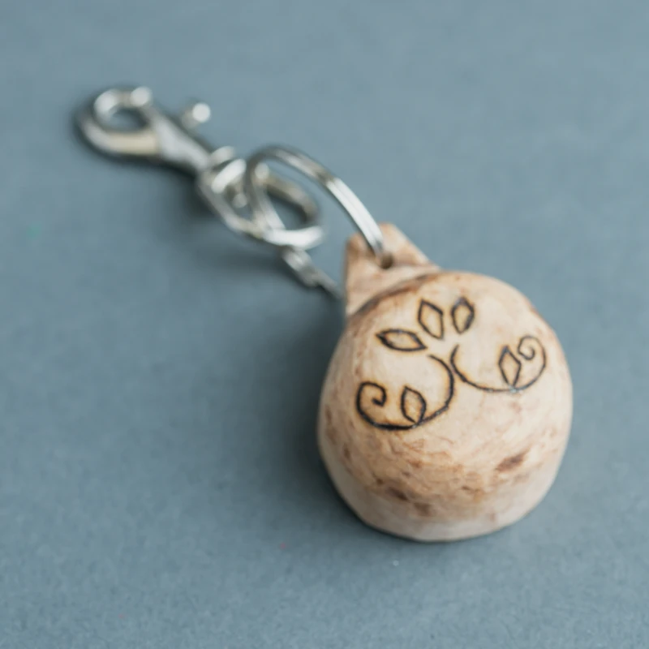
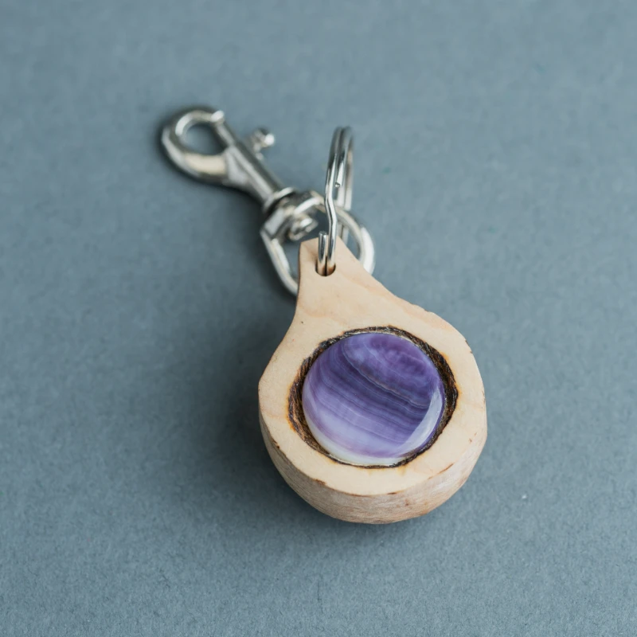
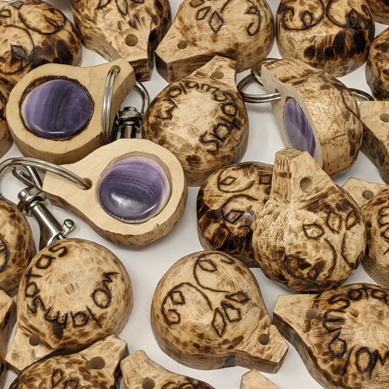
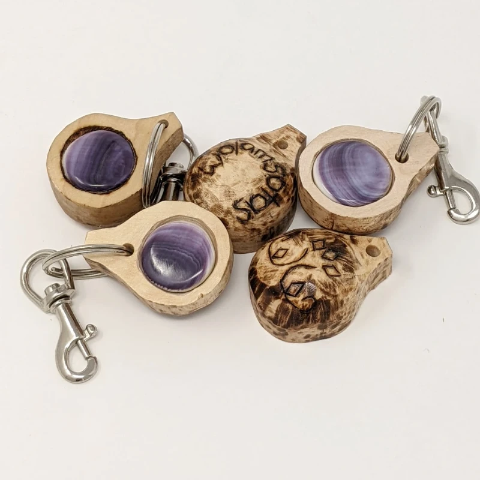
02
Double curve keychains
2022 · Maple, quahog shell
Keychains wood-burned with either the double curve motif or an affirmation written in Maliseet, made in collaboration with Maliseet instructors at the New Brunswick College of Craft and Design.
Not often held, the intention was to bring wampum shells, typically used for wampum belts, back into everyday life. Proceeds from sales went to the Kehkimin Initiative, a local Wabanaki learning centre.
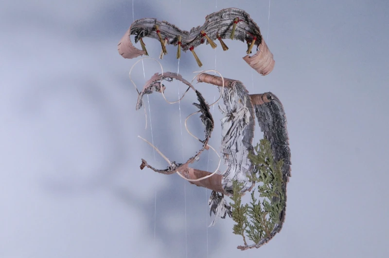
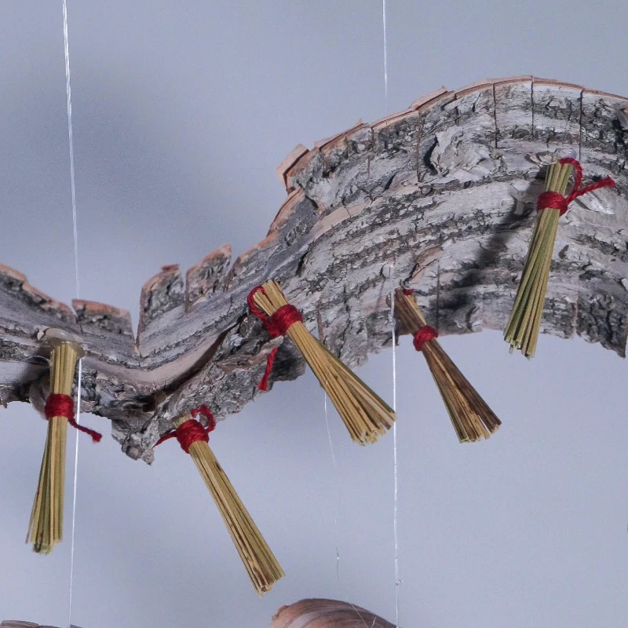
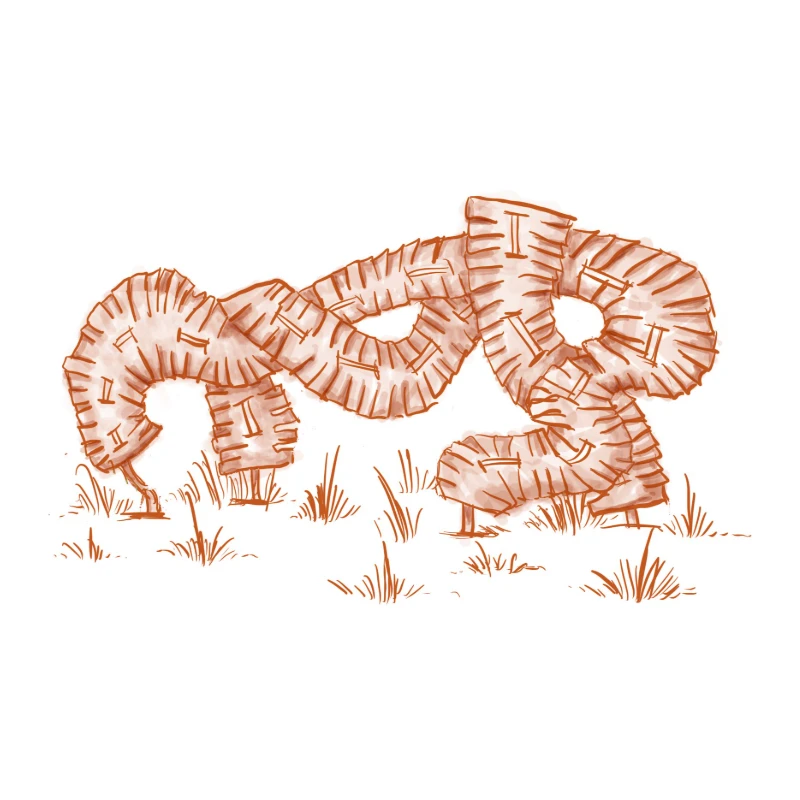
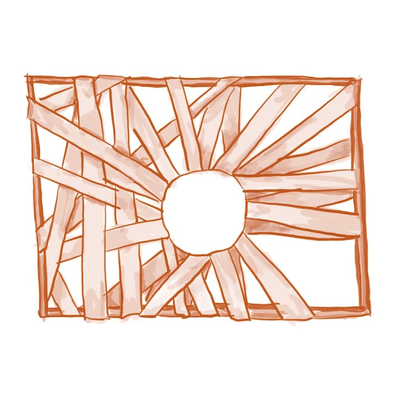
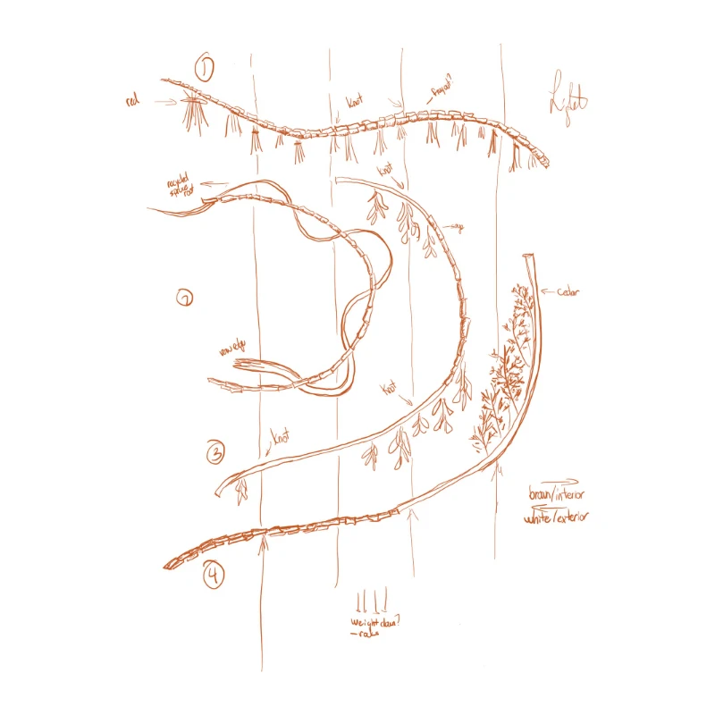
03
Deconstructed basket
2020 · White birch bark, spruce root, sweetgrass, cedar leaves, sage, nylon
Inspired by the traditional birch basket, this mobile sculpture displays raw material normally held in a practical, detailed and meticulous shape. What a basket normally holds now surrounds and supports it.
It is a study in displaying what heals us, so that those materials become the pillars that support us. It was made over four self-led days from medicinal plants, discarded birch bark and wire, after a season of learning to harvest bark and spruce root with teachers.
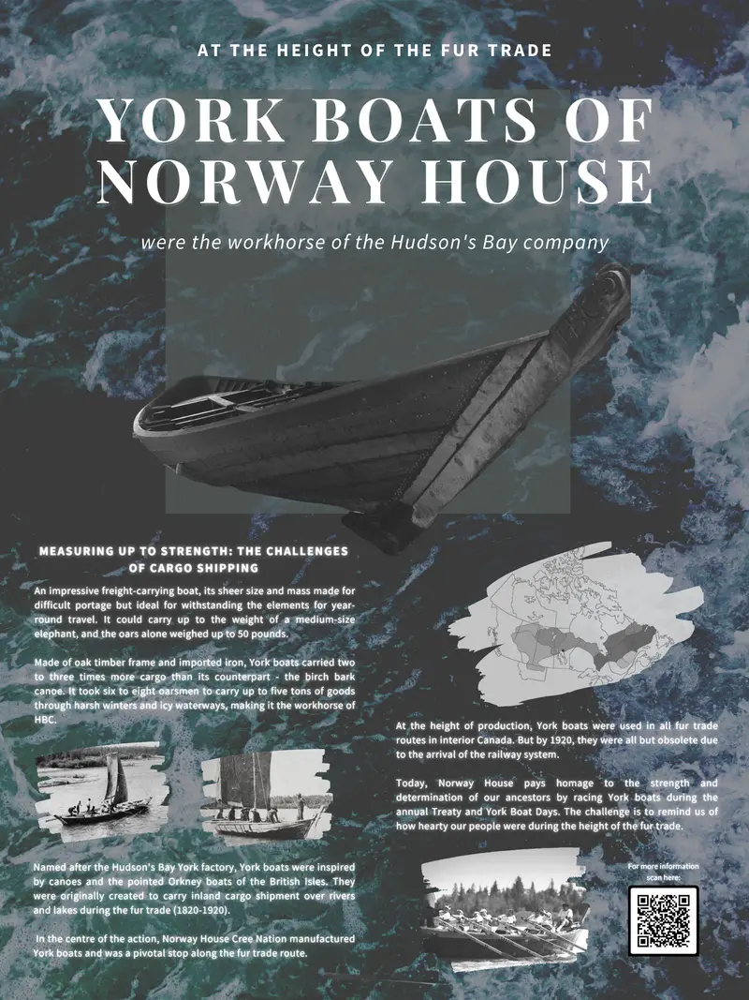
04
York boat paddle
2021 · Salvaged birch
A full-size paddle carved from salvaged birch, from sourcing the wood to finishing it with mechanical and hand tools. The process was a way to feel some of the labour behind a vessel that carried people and goods for decades: the significance of the York boat lies in the exertion it takes to build and maintain one.
York boats carried up to five tons of goods through harsh winters and icy waterways during the fur trade, rowed by six to eight oarsmen with oars weighing up to fifty pounds. Cree communities along the route built and rowed them, and some still honour that strength by racing York boats during annual Treaty and York Boat Days. The York boat also sails through the centre of the Coming Home puzzle.
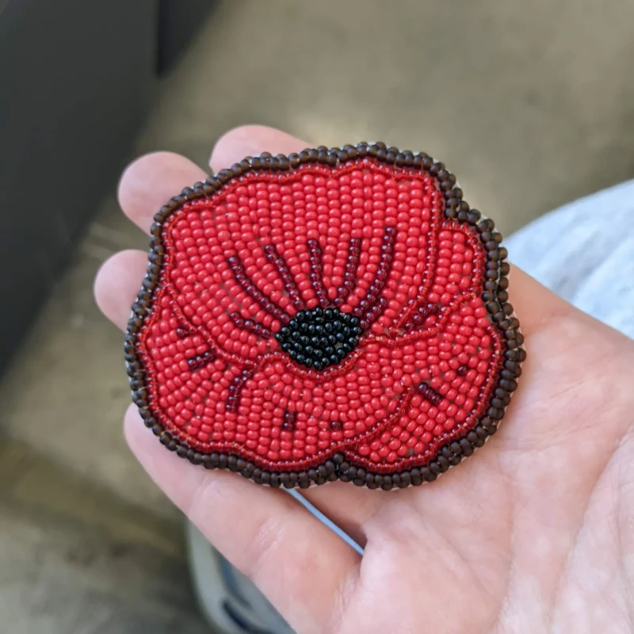
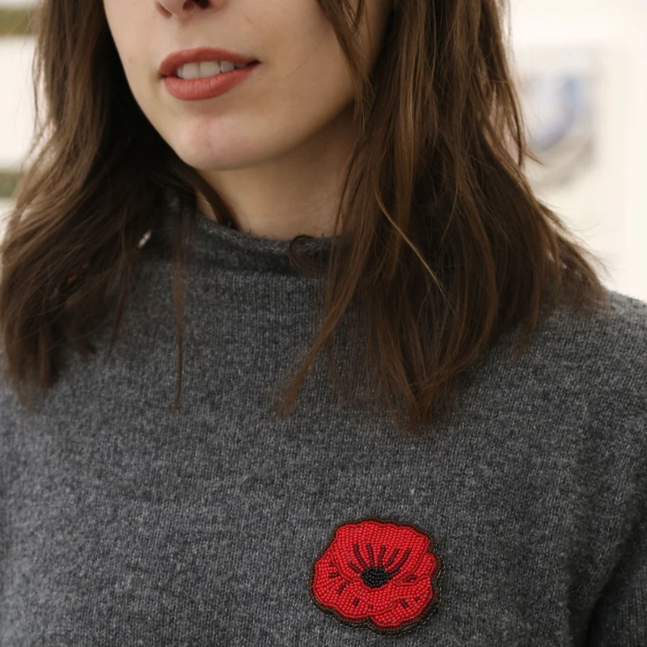
05
Poppy brooch
2022 · Beadwork
A beaded poppy for Remembrance Day. Beading is a way of preserving, honouring and carrying stories; a small object worn close to the body.